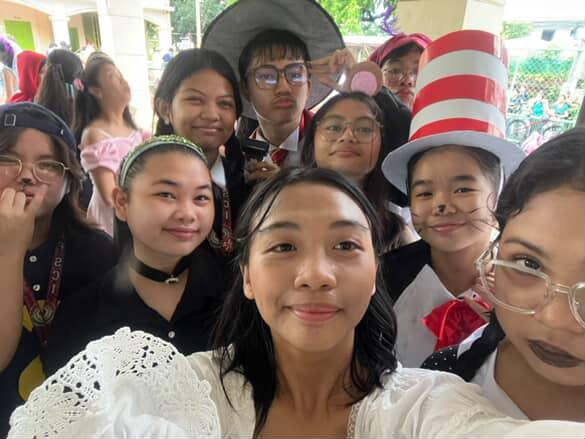
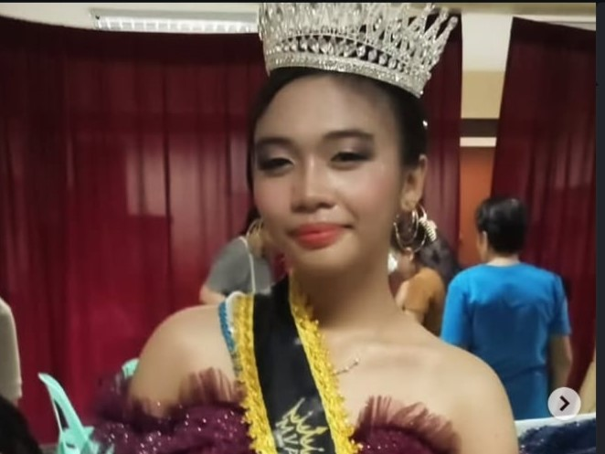
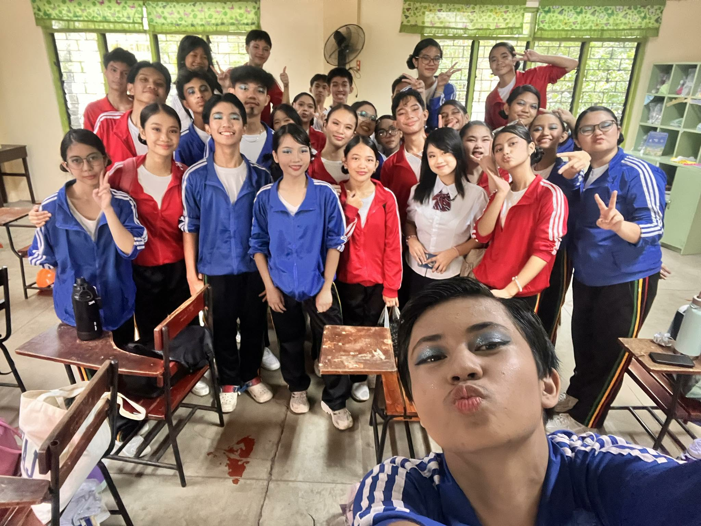
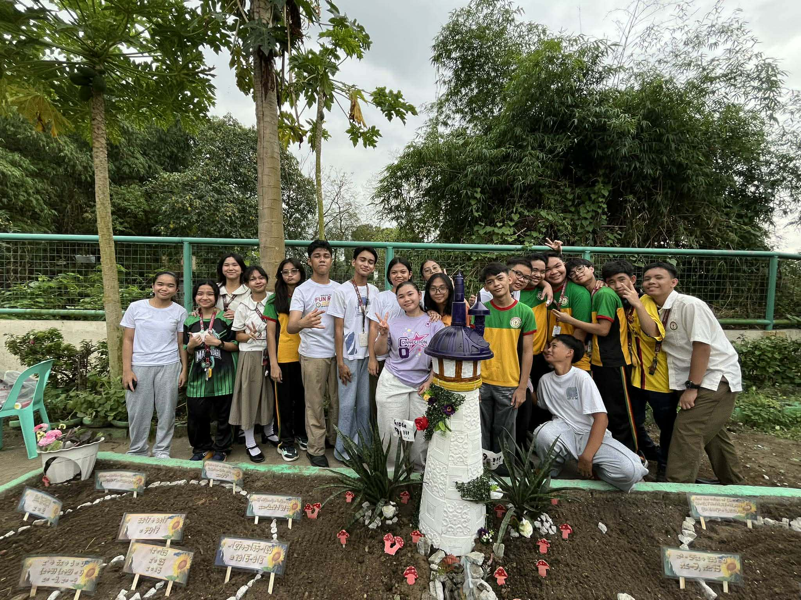
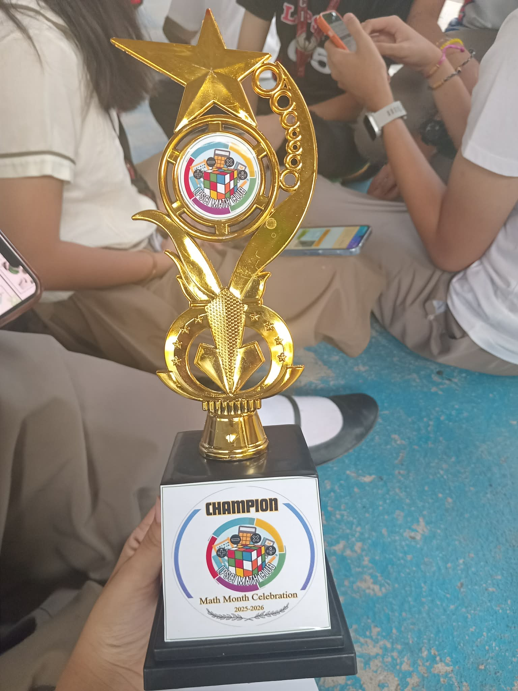
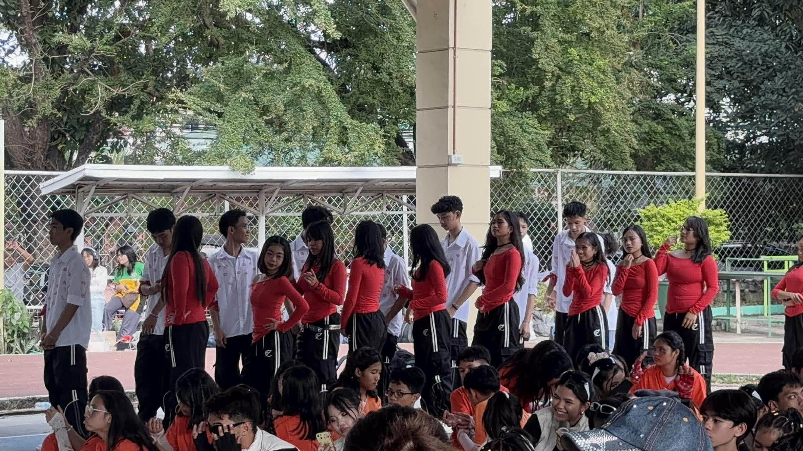
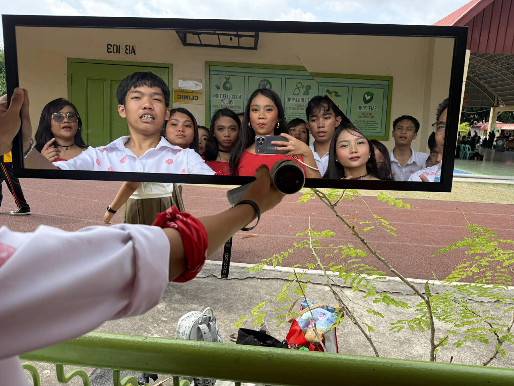
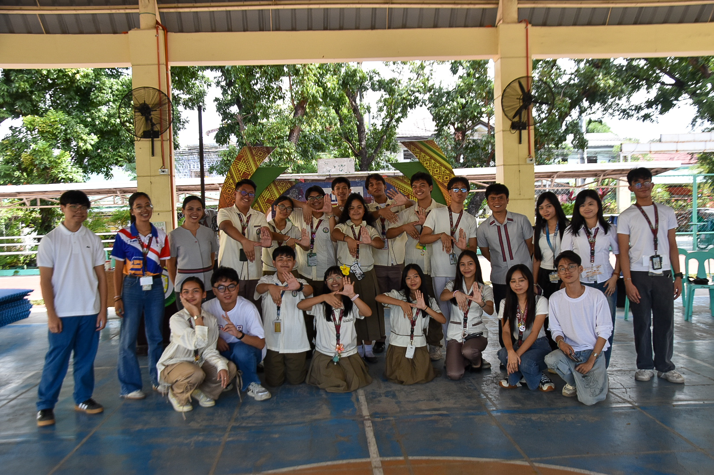
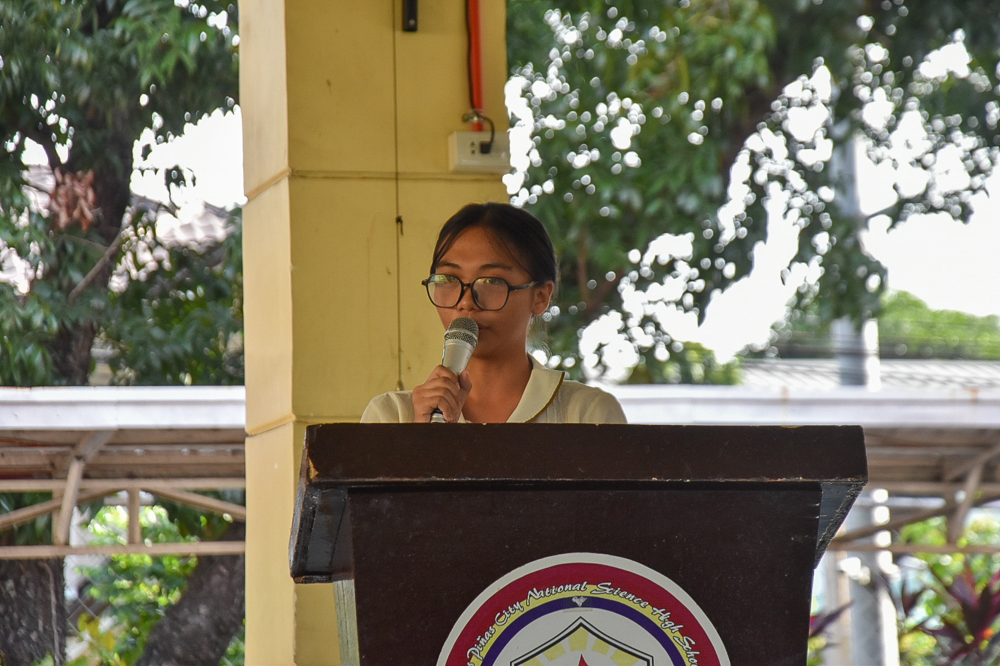
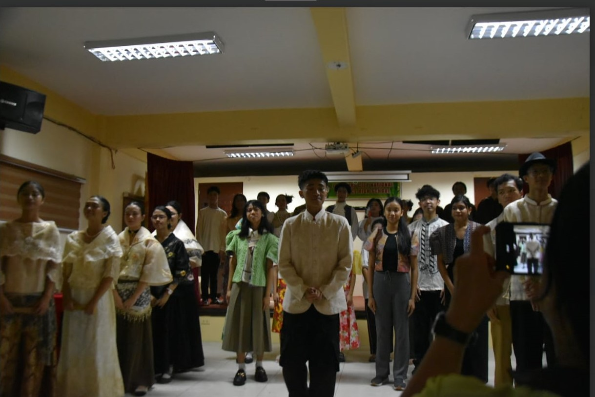

This event has taught me to use creativity and believe in the things I can do. This month was full of arts and crafts which really tested my creativity. But those activities only helped me improve, by opening my mind to the things that I can do. Apparently I just needed to use my own imaginations to create something beautiful because that's what creativity is about. It does not only apply to drawing, it also applies even to creating slogans, posters, dressing up, or decorating something.
As a student, there are so many performance tasks that awaits me, and being creative is a helpful tool. I will use my creative mind to create something beautiful along with putting my passion and determination. I will use my creations for good and to spread goodness as well.
The first day of english month, I wore a costume inspired by a book character from the Phantom of the Opera. I enjoyed playing that short "dress up" because I felt like the character. Along with that, I also managed to participate in some slogan and poster contests along with Persona Articulata that really helped me showcase my skills in creativity. I also supported our classmates, Nina and Emman, with their representation of the hunger games and I think they did an amazing job.
If I were to teach this subject to a student, I will be combine detailed explanation with explanations. This is helpful because the subject requires writing and therefore it needs detailed explanations and examples that students can use as a reference if they need to create an output.
Values Month


Values month obviously focused on values, and I could say that I've learned how to be a reflection of my values. The activities focused on morals, discipline, and ofcourse values which helped me to discover myself and be able to grow more as aperson. I also learned to form good relationships with other people and create friends by being kind.
Everyday, I meet and talk with a lot of people, I can apply what I learned by forming good relationships with those that I interact with everyday. While doing daily tasks, I can apply my values, being disciplined, patient, creative, and so much more. Every day is an oppurtunity to become a better version of myself and that's what I'll do.
This is honestly my favorite month, because I got to shine brightly. I participated at a pageant for the first time, the Most Valuable Person pageant, and I won. It was such an incredible journey because I got to show my talent and my skills in dancing, impromptu speeches, and being a reflection of the value I was holding: being humble. Not only that, our section participated in the annual VPOP competition. We showcased our talents in singing and dancing and won Champion!
If I were to teach values to a classmate, I would use many examples. To learn how to be a person of value, we can imitate them from those who are a model of their values. Giving examples of people who are a model of their values can inspire a classmate to do just the same seeing its benefits.
This event may be tiring, but it played a significant role for students to enjoy competitions and to also show their skills. These type of events help students to hone skills helpful for their growth. Not only that, this event also made students learn valuable lessons significant for their growth as an indivual,
Math month


Math month may seem to be just full of appreciation for numbers, but it was unexpectedly more than that. What I learned most from the events during math month, is that you can apply what you learn in math in various sectors. Math isn't just about numbers or counting, it's essential, and we use it for almost everything.
The experiences from math month will help me use the skills I've learned for every day life experiences. Computing, logical thinking, and so much more. I can use it for school, home, or anywhere.
The Math club was really creative and required every student in each section to participate. I also participated in one of their events, the Math Garden. It was such an amazing experience to lead our batch and enhance my leadership skills. I got to work with many creative people, and I also made new friends. Sacrifices were worth it because we ended up winning! Kudos to my grade 9 group!
In explaining math, what works for me is through visual representations, so if I would teach this to my classmate, I would use visual aids. Along with that, I’ll include sample questions for them to see the step-by-step process in solving because math is more on numbers than words.
This Math month has played a significant role in expounding the purpose of math. Most of us see math as a hard subject but through this event, we realized that math can be fun. It helped us to be more open in learning math.
Mapeh Month


The whole MAPEH month's activities tested our creativity and skills, and helped us hone more skills. I learned to have sportsmanship, be more confident, and be a team player. Even though this month is full of physical activities, it still taught values.
In real life, these skills are mostly used, therefore I just have to apply them. In all competitions, I will apply sportsmanship, learning to accept defeat and instead be open to improvement. Every day, confidence should rise, not letting doubt be a barrier to me and my dreams, and embracing the values I’ve learned from those events.
The MAPEH club had a lot of events prepared; Folk dance, Street dance, Mural, and BOTB.
I participated only in the street dance event, and we won third runner-up! Our leader was really talented, and I enjoyed dancing. I believe I became a much more better dancer after all our practices and training. Other than street dance, the other events were so cool because I got to see so many people shine.
MAPEH is a mixture of 5 different subjects. If I were to teach this subject to a classmate, I would break them down, separating those 5 subjects. I will provide visual aids of course and provide detailed explanations for better understandings.
This event played a significant role in students’ enjoyment, helping them have a little rest by participating in physical activities like dancing. A lot of students enjoyed watching as well meaning that this event helped them rest and have even just a little fun which was essential for students.
sslg Elections 2026


This election 2026, taught me to be wise in voting. Selecting leaders is not an easy task. It is something that requires critical thinking essential for decision making. The decision you are going to make will create an impact for the future. Even if it is just selecting leaders for the next school year, it still needs to be carefully planned. Those leaders will be the one to lead our school, we will be putting our trust all on them, and our future also depends on them. This will also happen for the future, when I'll be voting for the country's leaders.
Learning how to create wise decisions is essential for our daily-life. Therefore, in every decision I'll be making, I will be wise and think about the impact it can cause for the future. Even simple decisions can create a big result for what will happen.
This year, I decided to run again, but for the position of Peace/ Protocol Officer. It was a risk considering the fact that I have lost before but I decided that I will take the oppurtunity. Being given a second chance was my moment to prove to people what I can do for this school and that I can do more. All the campaigns, and struggles I went through was worth it after winning the position. I know that I will do my best as a student leader and do my position well.
If I were to explain the topic of decision-making to a classmate, I would provide my personal experiences and also real-life situations. I will do this to help them realize the impact of a decision and why it should be valued as important. I believe that my providing personal experiences as well will open their minds that tthese situations are real.
This particular event plays a significant role for students to be independent. Creating a decision is mostly by an individual and they must learn how to do it on their own knowing the life decisions they'll need to make soon. This event helps them have an open mind and challenges their critical thinking skills.
Noli Me Tangere Play


I learned from our play of Noli Me Tangere unless we decide to speak up, we'll always be in the hands of those corrupted with power. Even if our play is fictional, it still had an impact to me learning all the hardships Filipinos had to face with such an abusive government. It kind of reflects what's happening now, there are still those corrupted in power but we are still to weak to stand up. I learned that we need to have a commitment and compassion for our country if we want it to grow. We can't be stuck with enless cycles of corruption.
Being woken up by Noli, I will be more aware of my surroundings, my country, and ongoing trends and issues. As a citizen myself I need to be aware of what's happening in my country. I will treat the news important and use them more often for updates.
In our Noli play, I was assigned the role of an ensemble, those who sing and also a background character. I think I did my job well and I believe that I did my part in our play. It felt fun to be singing and dancing, and also show a little bit of acting. My role may be small but it still has an impact and importance for the play and the whole concept.
If I were to explain Noli to a classmate, I'd show them our Noli play instead, because it can capture hearts and it provided clear understandings of the whole book which I think will be useful.
Bloopers / Rehearsals
Outcome